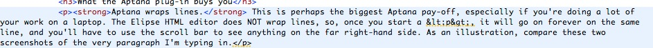
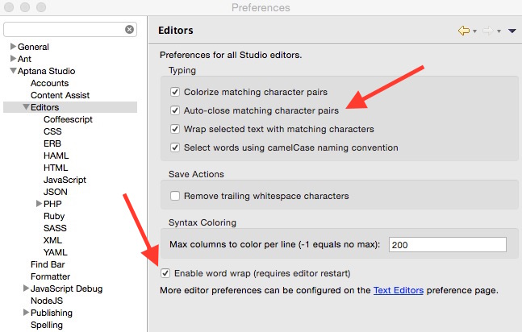

The Aptana Eclipse Plug-In
Aptana's Eclipse plug-in offers a few very useful tools. This page will give you a quick run-down on how to get them and how to use them. The Aptana website boasts that it is useful for development with Javascript, Ruby on Rails, PHP and Python--in addition to CSS and HTML. I have not used it for the former. For working with HTML, the tool is a big help in that it:
- Wraps lines (especially useful on a laptop)
- Automatically inserts matching <p> </p> tags
- Has a command that converts angle brackets and ampersands to "HTML entities"
- Allows remote system synchronization
This page will first discuss Aptana's advantages, then how to plug it into Eclipse, and then address a couple of the plug-in's more annoying features.
What the Aptana plug-in buys you
Aptana wraps lines. This is perhaps the biggest Aptana pay-off, especially if you're doing a lot of your work on a laptop. The Elipse HTML editor does NOT wrap lines, so, once you start a <p>, it will go on forever on the same line, and you'll have to use the scroll bar to see anything on the far right-hand side. As an illustration, compare these two screenshots of the very paragraph I'm typing in.
Without wordwrap.

With wordwrap.
To turn on the line wrap, go to Preferences > Aptana Studio > Editors, and check the "Enable word wrap" box. See the bottom red arrow in the screenshot below.
Installing Aptana
You cannot use the Eclipse Marketplace to get the Aptana plug-in. You have to go to their website and jump through a few hoops But the features described above make it worth your while. Here, then, is how I managed to install it, after several fruitless attempts by other means. (Two things worth noting: (1) For some reason the download wouldn't work on the Mac version of Firefox--I had to use Safari. And (2), this is how I installed Aptana 3.6.0 onto the STS version of Eclipse in November of 2014--of course, anything could change at some point in the future.)
Go to http://www.aptana.com/products/studio3/download, or if that link is dead, search on "download Aptana studio eclipse". You're looking for a page that has the radio buttons and the download button like the image below. It's not immediately apparent, but the download page has two options--the Standalone Version (the default) or the Eclipse Plug-in Version. See the radio button the red arrow is pointing at. Make sure you select the plug-in version, then click the Download button.

The above steps bring you to a new page. The instructions will tell you to copy a URL to your clipboard and install from Eclipse. I found the remainder of the install process pretty easy.
PyDev issue. If you have the PyDev plug-in for Eclipse, the installation process will remove it after notifying you that it is going to do so. The is because the latest (3.6) version of Aptana comes with its own version of PyDev. I have not (yet) played around with Aptana's version of PyDev.
Java code issue. I have two projects in my Eclipse workspace--one in Java, and one in HTML. After installing the Aptana plug-in, my Java project would no longer build. The install completely wiped out the Java Build Path in the project’s Properties. I had to check the Java 7 box and reconfigure the project with all my .jar files.
Aptana's annoying apostrophe issue
By default, Aptana auto-closes matching character pairs. What this means is that when you type the first of a "character pair" (for example, the left-hand side of a pair of parentheses or curly braces, or single- or double-quotes), it automatically types the matching right-hand side of the pair for you. Your job is simply to fill the inside of the pair with whatever you want to type; then you hit the Tab key, which brings your cursor to the outisde of the pair, and you can go on your merry way with whatever you want to type.
This can sometimes come in handy. The problem is that Aptana considers the single quote a matching pair. And the single quote is the same as an apostrophe. Which means that whenever you use an abbreviation--or the possessive "'s", you end up with an unnecessary matching apostrophe. And that is a pain to delete. The bother of deleting the unwanted apostrophe is much greater than the convenience of the matching character pair. So my vote is, remove the option. How to do that? Way up towards the top of this page there's a screenshot with two red arrows. The topmost arrow points to an option labeled "Auto-close matching character pairs." Uncheck that option.